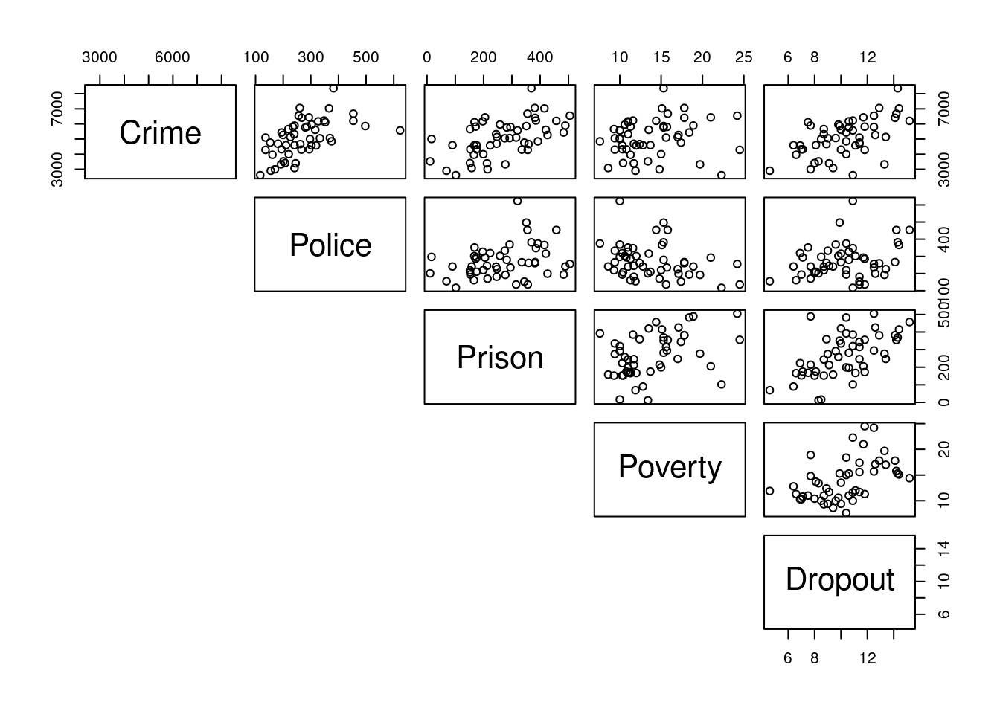

3 Intro
3.1 Intended Learning Outcomes
After attending this lab, you should be able to use R to:
- interpret the population (sample) correlation coefficient;
- perform tests on the population correlation;
- simulate random variables with different levels of correlation; and
- calculate the correlation coefficient using what was learned in lectures.
3.2 Introduction
In the lectures we learned how to assess the strength of a linear relationship between random variables using the correlation coefficient. The population correlation is a measure of the magnitude of the strength of the relationship between two random variables X and Y, and is defined as
\[\begin{equation} \rho(X,Y) = \frac{\text{Cov}(X,Y)}{\sqrt{\text{Var}(X)\text{Var}(Y)}}, \tag{2.1} \end{equation}\]
and can be estimated by replacing each of \(\text{Cov}(X,Y)\), (X) and (Y) by their unbiased estimators to give
\[\begin{equation} r = \frac{S_{xy}}{\sqrt{S_{xx}S_{yy}}}=\frac{\sum^{n}_{i=1}(x_i-\overline{x})(y_i-\overline{y})}{\sqrt{\sum^{n}_{i=1}(x_i-\overline{x})^2(y_i-\overline{y})^2}}, \tag{3.1} \end{equation}\]
the sample correlation coefficient (-1 \(\le\) r \(\le\) 1).
Given a sample of data, we can assess the statistical significance of the observed correlations between variables in the wider population. To do this we perform a hypothesis test.
3.3 Population correlation hypothesis test
Recall Example 1 from Practical 1 in which volunteers had their power output (in watts), weight, and leg
length measurements recorded. Firstly, set the working directory of RStudio to that in which you have
stored your R files and the data by going to:
Session > Set Working Directory > To Source File Location
Now open the data from Example 1 by typing the following command from your R script:
phys <- read.csv("phys1.csv")
Here we would like to assess the strength of the relationship, if any, between Power Output and Weight, which we explored in scatterplots in the previous practical, displayed in Figure 1. We are going to do this for male and female volunteers separately, such that we assess the statistical significance of the observed correlation between these two variables in the wider populations of (i) males and (ii) females.
Figure 3.1: Scatterplot of Power Output versus Weight.
Firstly, we subset the data for males and females. One way to do this is:
physM <- subset(phys, Gender == "Male", data = phys)
physF <- subset(phys, Gender == "Female", data = phys)
##
## Pearson's product-moment correlation
##
## data: physF$Power1 and physF$Weight
## t = 1.42, df = 13, p-value = 0.1791
## alternative hypothesis: true correlation is not equal to 0
## 95 percent confidence interval:
## -0.1795155 0.7398300
## sample estimates:
## cor
## 0.3664454We now perform, separately for males and females, the following hypothesis test:
We test the null hypothesis, \(H_0\), that is, that in the population of males/females the correlation between Power Output and Weight is 0 against the alternative hypothesis, \(H_1\), that the correlation is not equal to 0.
To compute the sample correlation coefficient, r, and perform our hypothesis test, we use the cor.test
command. For the males data, the command is as follows:
cor.test(physM$Power1, physM$Weight)
Note: in the cor.test command the $ notation is required to access the variables from the subsetted data.
The hypothesis test produces a p-value, where we reject the null hypothesis, \(H_0\), for small values of the p-value (typically p-values < 0.05). It also produces a 95% confidence interval for a range of plausible values for the true population correlation.
What is the sample correlation coefficient for the males data? (to 4 decimal places)
What is the p-value for the test? (to 6 decimal places)
The sample correlation coefficient tells us that Power Output and Weight have a , relationship.
Based on the p-value of the test, we would .
Perform the same test on the Female data.
What is the sample correlation coefficient for the females data? (to 4 decimal places)
What is the p-value for the test? (to 4 decimal places)
The sample correlation coefficient tells us that Power Output and Weight have a , relationship.
Based on the p-value of the test, we would .
Note: if we do not subset the data by gender, we obtain a sample correlation coefficient \(r = 0.89\), with a p-value \(\lt\) 0.05, and thus we would conclude that there is a strong, positive linear relationship between Power Output and Weight. However, we now know that is not the case for females.
3.4 Calculating the correlation by hand
To compute the sample correlation coefficient, r, the command cor.test uses the formula given in (3.1). To check that the cor.test command is ‘correct’, we can ourselves calculate the correlation directly using the following commands:
var # computes the variance of a given vector
cov # computes the covariance between the vectors x and y
sum # returns the sum of the values given
mean # computes the mean of a given vector
sqrt # computes the square-root of a given vector
- Using the commands
varandcov, compute the variance and covariance given in (2.1) for the males data, where Y denotes the response variable Power Output, and X denotes the explanatory variable Weight.
crime <- read.csv("crime.csv")
pairs(crime[,-1], lower.panel = NULL)